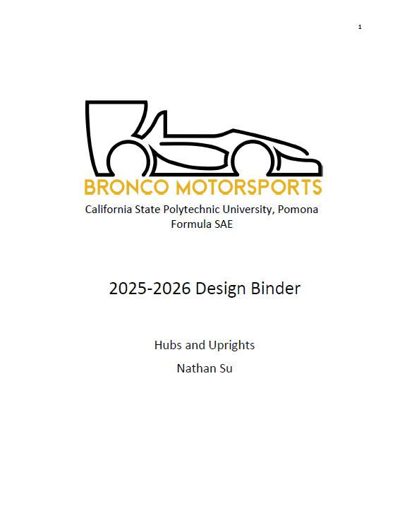
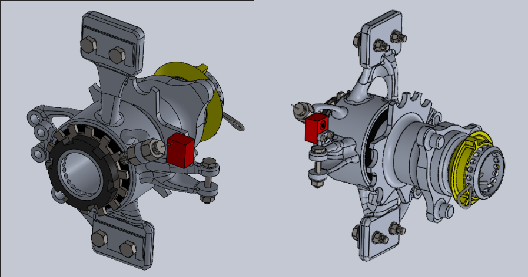
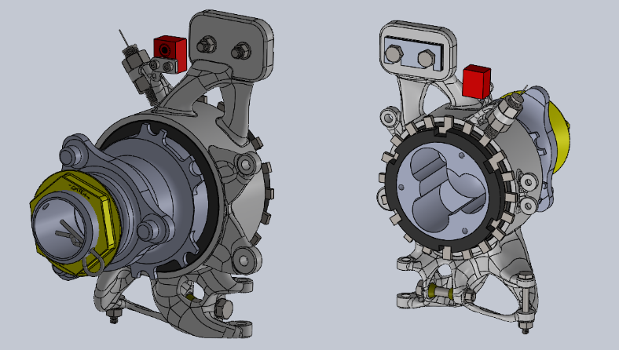
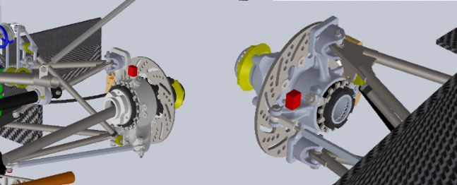
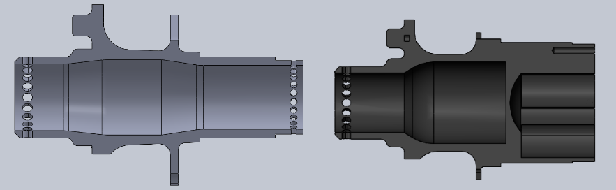

by Nathan Su
In the second year of being the captain of the hubs and uprights subsystem, I utilized generative shape design in Fusion to reduce weight by up to 30% while maintaining stiffness and reliability. I then validated this design using multi-body FEA simulations to simulate static stress, fatigue, and vibration characteristics of the new parts. This design change was warranted due to the new season's goal of refinement for performance, an increased budget, and advancements in my engineering skills.




